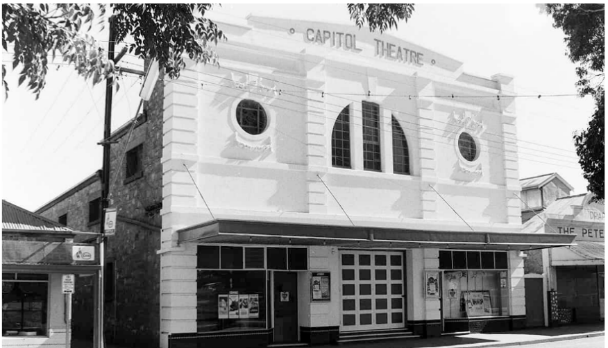
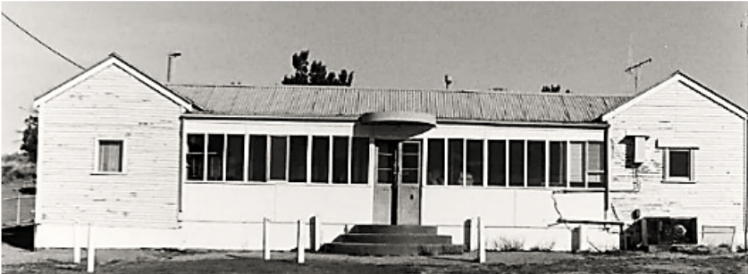
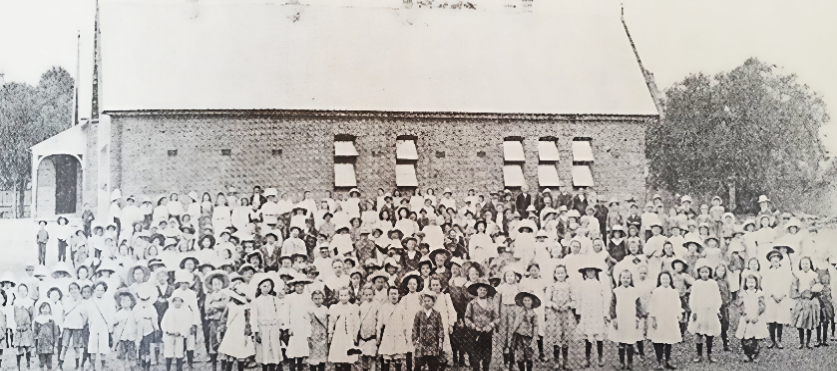

Peterborough sits 244 kilometres north of Adelaide in South Australia's Mid North region. First settled in 1875 and originally named Petersburg after German landowner Peter Doecke, the town was renamed in 1918 as anti-German sentiment swept Australia during the First World War.
The town was built around the railway. At its peak, over one hundred trains a day passed through Peterborough, connecting Broken Hill to Port Pirie and Adelaide to the outback. Three separate rail gauges met here, a distinction found nowhere else in Australia.
The Steamtown Heritage Rail Centre, the ornate 1927 Town Hall, Bob the Railway Dog on Main Street, and the Social History Museum in the YMCA building all tell that story today.
150 years on, Peterborough endures.


Peterborough was built by rail: founded in 1880 with the Railway station and goods shed built in the land known as the railway reserve, growing into South Australia's
busiest station outside Adelaide by 1891, despite chronic housing shortages solved through cottages,
boarding houses, and later semi-detached homes in Mill Street and Tripney Avenue. Standard gauge conversion
in the 1960s modernised the yards, and the Indian Pacific began running in 1970. Decline followed the 1978
rail amalgamation, with station closures
through the 1980s and the last workers finishing in 1997, ending 117 years of railway employment.

Built in 1926 by brothers Thomas and Herbert Rees, Peterborough's Capitol
Theatre opened as a grand 1,020-seat venue for pictures and theatrical performances. Contractors Silver
and Ollrich constructed the building, which hosted decades of entertainment under Thomas Rees and later Oscar
Rondahl, who modernised its sound system in 1949. After changing hands and eventually closing as a cinema
in 1976, the building was later purchased by Phil White. Today,
the historic structure continues serving the community as the unique '229 on Main' café.

In the early 1920s keen golfers, including saddler William Rogers,
turned an unofficial nine-hole course into the Peterborough Golf Club.
This history walk follows the club from its first official match in 1922
right through to 1929, including the opening of the new 18-hole course in July 1927.
Read about record crowds, championship days, a clubhouse carted to the links
in one piece and the ladies who kept everyone fed. The original newspaper clippings
and photos bring the story to life for visitors..

From a small church classroom in 1881 to a purpose-built High School in 1927,
this history walk traces education in Peterborough. Read how overcrowded classrooms,
unhealthy conditions and years of waiting shaped the school, and how the community fought for the land,
the building and the opportunities we take for granted. Meet the head teachers, the old scholars and
teachers remembered on the memorial tablet and the students who competed in sport. Original photographs
and newspaper clippings bring it all vividly to life.

Peterborough spent more than thirty determined years fighting for a hospital of its own.
This history walk follows the fundraising, the setbacks and the community spirit that led
to the opening of the Soldiers Memorial Hospital in 1922, and the Mother's Wing that followed
in 1926. Discover the early private nurses and doctors, the carnivals, dances and fetes that raised the money,
and the many nurses who trained here. Original newspaper clippings and photographs show how the whole town built its
hospital together.